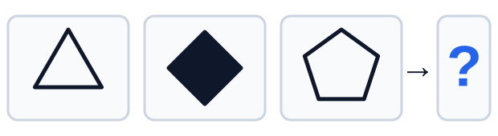
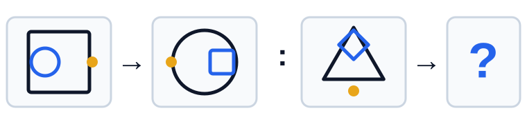
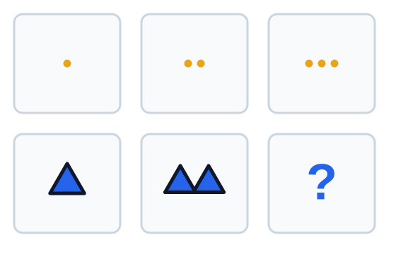
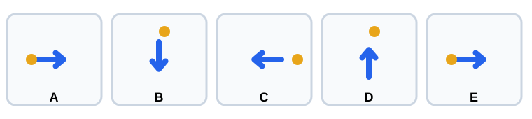
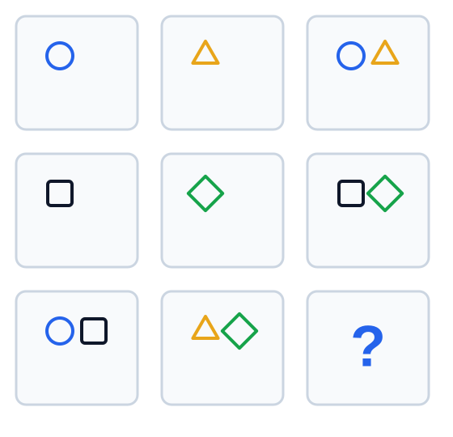
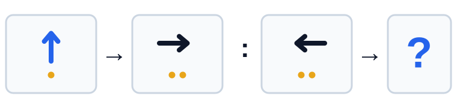

Gambar yang tepat untuk melanjutkan deret adalah...
Pembahasan: Arah panah berputar 90 derajat searah jarum jam: kanan, bawah, kiri, lalu atas. Jumlah titik bertambah satu, sehingga gambar berikutnya adalah panah ke atas dengan empat titik (B).
Draf review visual. Belum masuk Firebase dan belum digunakan pada aplikasi.
Pembahasan: Arah panah berputar 90 derajat searah jarum jam: kanan, bawah, kiri, lalu atas. Jumlah titik bertambah satu, sehingga gambar berikutnya adalah panah ke atas dengan empat titik (B).

Pembahasan: Jumlah sisi bertambah dari tiga, empat, lima, menjadi enam. Isi bangun bergantian kosong, penuh, kosong, sehingga berikutnya segi enam penuh (D).

Pembahasan: Bentuk luar dan bentuk dalam bertukar tempat. Posisi bentuk kecil dan penanda juga berpindah ke sisi yang berlawanan. Penerapan aturan tersebut menghasilkan pilihan C.

Pembahasan: Pada setiap baris, kolom ketiga memuat jumlah simbol dari kolom pertama dan kedua: satu ditambah dua menjadi tiga. Baris kedua harus berisi tiga segitiga penuh (A).

Pembahasan: Pada empat panel, titik berada di sisi yang berlawanan dengan arah panah. Pada panel D, panah dan titik sama-sama mengarah atau berada di sisi atas, sehingga D berbeda.
Pembahasan: Panah berputar 90 derajat searah jarum jam, titik berpindah sudut searah jarum jam, dan warna bergantian biru-hitam. Berikutnya panah kiri hitam dengan titik kuning di kiri bawah (A).

Pembahasan: Sel ketiga pada setiap baris merupakan gabungan dua sel sebelumnya. Baris terakhir harus menggabungkan lingkaran-persegi dengan segitiga-belah ketupat, sehingga memuat keempat bentuk (A).

Pembahasan: Perubahannya adalah rotasi 90 derajat searah jarum jam, pergantian warna, dan penambahan satu titik. Panah kiri hitam dengan dua titik berubah menjadi panah atas biru dengan tiga titik (A).
Pembahasan: Jumlah sisi berkurang satu, jumlah titik bertambah satu, dan isi bergantian penuh-kosong. Setelah persegi penuh dengan tiga titik, berikutnya segitiga kosong dengan empat titik (A).
Pembahasan: Lingkaran bergerak satu sudut searah jarum jam, sedangkan persegi bergerak satu sudut berlawanan arah jarum jam. Posisi berikutnya adalah lingkaran kiri bawah dan persegi kanan atas (A).